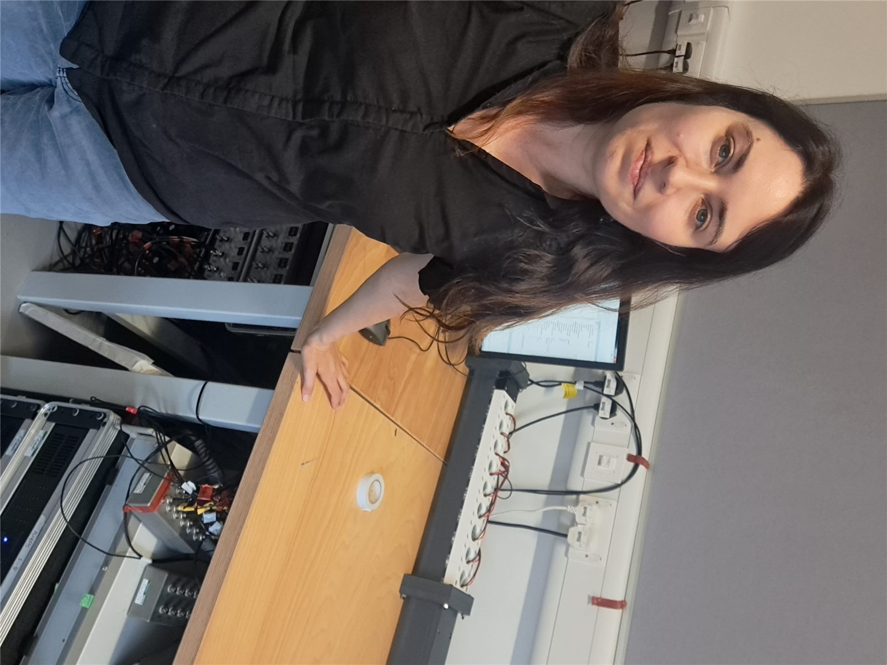
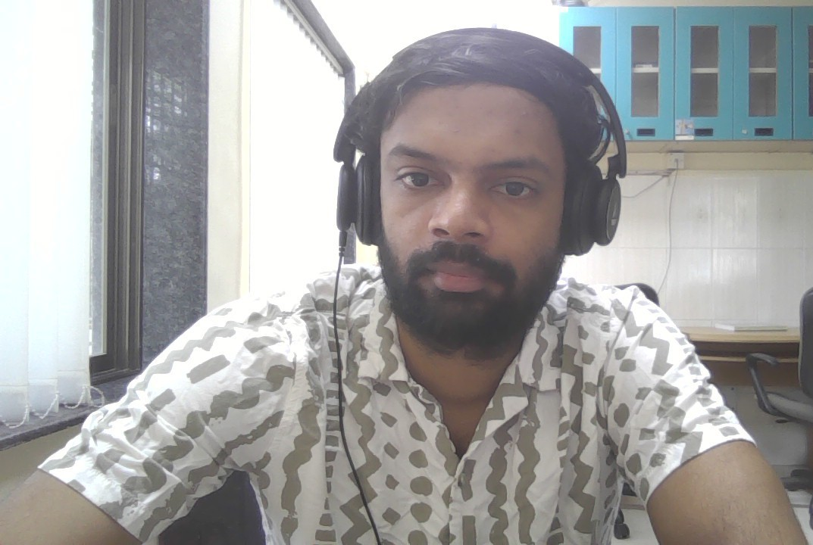
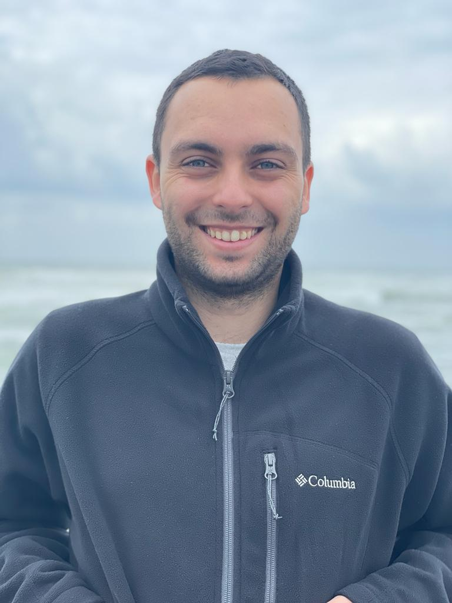
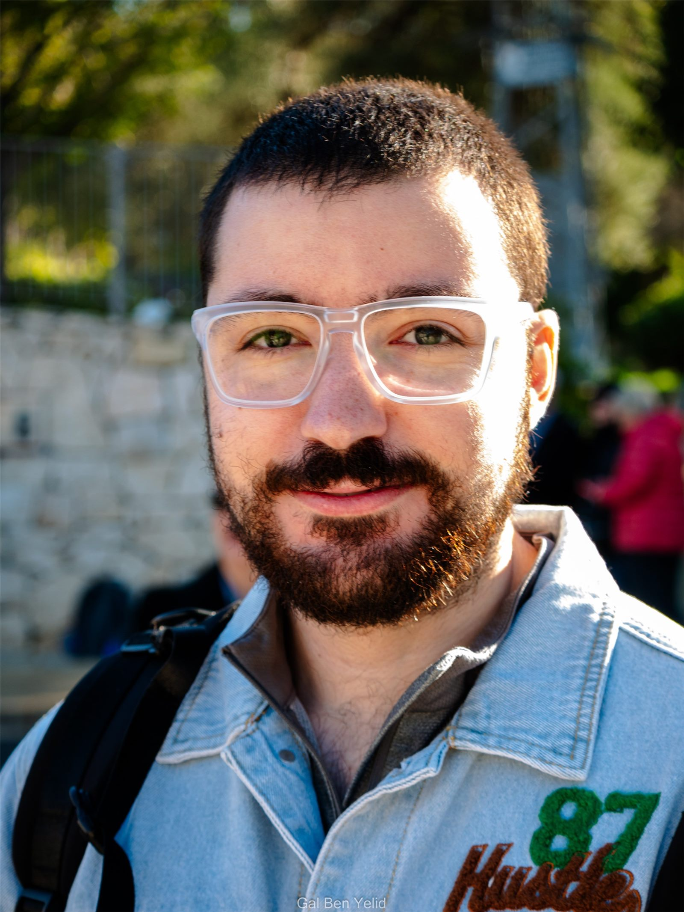

Principal Investigator (Assistant Professor)

Dr. Lea Beilkin-Sirota
leabeilkin@tauex.tau.ac.il · Google Scholar
- 2019–2020
- Postdoctoral Associate (jointly) at the Soft and Complex Matter lab and the Topological Matter and Quantum Transport lab, School of Physics and Astronomy, TAU, and the Non-Equilibrium Statistical Mechanics of Soft Matter lab, School of Mechanical Engineering, TAU
- 2016–2018
- Postdoctoral Associate at the Active-Adaptive Control lab, Department of Mechanical Engineering, MIT, via the MIT-Technion program and an NSF-EAGER grant
- 2016
- PhD, Faculty of Mechanical Engineering, Technion – I.I.T.
- 2008
- BSc, Faculty of Mechanical Engineering, Technion – I.I.T.
Research Scientists
Dr. Sayan Jana
PhD: Theoretical Condensed Matter Physics, Institute of Physics, Bhubaneswar, India
MSc: Physics, R.K.M.R.C Narendrapur, Calcutta University, India
BSc: Physics, West Bengal State University, India
Postdoctoral Fellows

Dr. Bhargav Pavan Kumar Sistla
Ph.D: Centre for Systems and Control, IIT Bombay, India
M.Tech: Centre for Systems and Control, IIT Bombay, India
B.Tech: Electrical & Electronics Engineering, VNIT Nagpur, India
Students

Asaf Kor
PhD student (direct track), Mechanical Engineering, TAU

Gal Ben Yelid
MSc student, Mechanical Engineering, TAU
Alumni
Dr. Bertin Many Manda, Postdoctoral Fellow, 11/24-02/26.
Dr. Y. R. Kartik Hegde, Visiting Scholar, 08-10/2023.
Yehonatan (Johnny) Benisty, MSc, Mechanical Engineering, TAU.
Asia Najjar, BSc final year project, Electrical Engineering, TAU.
Bakaa Nijm, BSc final year project, Electrical Engineering, TAU.
Gil Koresh, Undergraduate lab assistant, Mechanical Engineering, TAU.
Or Lasri, MSc Direct track, Mechanical Engineering, TAU.
Omri Dalin, MSc, Mechanical Engineering, TAU (co-advisor).
Itai Dotan, BSc final year project, Electrical Engineering, TAU.
Moran Idan, BSc final year project, Electrical Engineering, TAU.
Nadav Malachi, BSc final year project, Electrical Engineering, TAU.
Ido Bookstein, BSc final year project, Electrical Engineering, TAU.